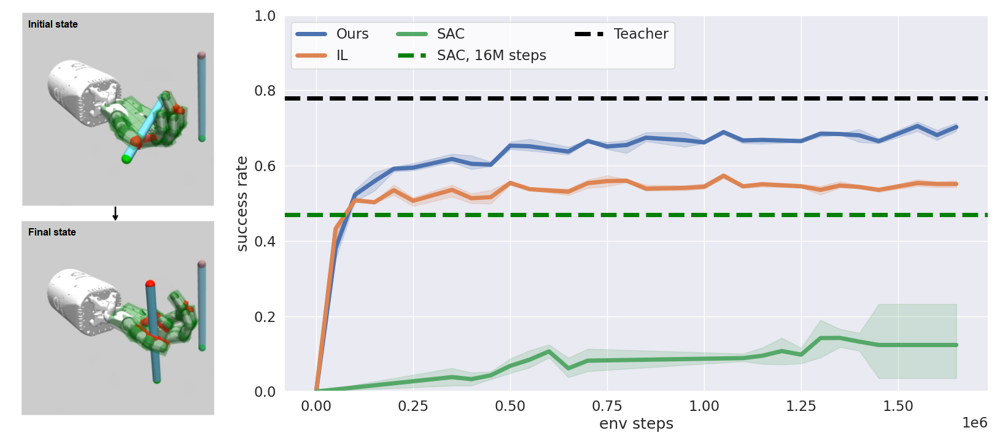
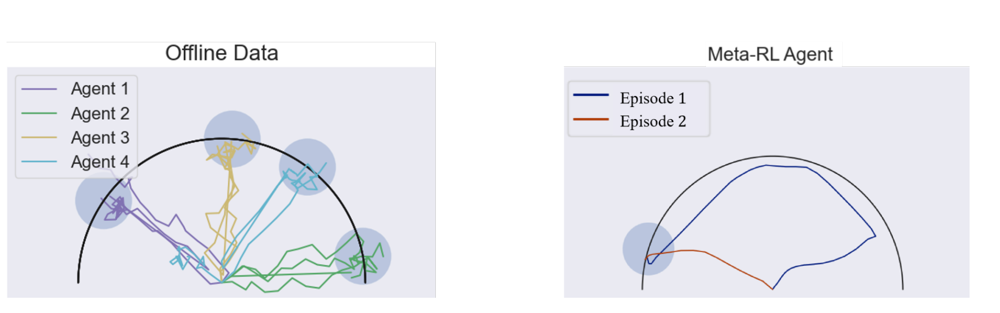

|
Idan Shenfeld
I am a first year Ph.D. student in EECS at MIT CSAIL advised by Professor Pulkit Agrawal. I'm currently interested in making it easier and faster to train RL agents, especially in challenging cases such as history-dependent policies and partial observability.
Before MIT, I worked as an AV applied researcher at GM Ultra Cruise project. My main research there was on 3D segmentation and detection algorithms from an array of RGB cameras. In my time there I had the pleasure of working with Dr. Netalee Efrat Sela and Dr. Shaul Oron.
Prior to that, I completed my bachelor's degree in EECS from the Technion where I worked with Professor Aviv Tamar. During my bachelor's degree I was supported by the Rothschild Fellowship.
Email /
Resume /
LinkedIn /
Scholar
|
|
|

|
TGRL: An Algorithm for Teacher Guided Reinforcement Learning
Idan Shenfeld,
Zhang-Wei Hong,
Aviv Tamar,
Pulkit Agrawal ,
ICML, 2023
RRL Workshop at ICLR Spotlight 2023, spotlight
site /
openreview /
bibtex
Learning from rewards (i.e., reinforcement learning or RL) and learning to imitate a teacher (i.e., imitation learning) are two established approaches for solving sequential decision-making problems. To combine the benefits of these different forms of learning, it is common to train a policy to maximize a combination of reinforcement and imitation learning objectives. However, without a principled method to balance these objectives, prior work used heuristics and problem-specific hyper-parameter searches to balance the two objectives. We present a \textit{principled} approach, along with an approximate implementation for \textit{dynamically} and \textit{automatically} balancing when to follow the teacher and use rewards. The main idea is to adjust the importance of teacher supervision by comparing the agent's performance to the counterfactual scenario of the agent learning without teacher supervision and only from rewards. If incorporating teacher supervision improves performance, the importance of teacher supervision is increased and otherwise it is decreased. TGRL outperforms strong baselines across diverse domains without hyper-parameter tuning.
|
|

|
Offline Meta Reinforcement Learning - Identifiability Challenges and Effective Data Collection Strategies
Ron Dorfman,
Idan Shenfeld,
Aviv Tamar
NeurIPS, 2021
openreview /
bibtex
Consider the following instance of the Offline Meta Reinforcement Learning (OMRL) problem: given the complete training logs of N conventional RL agents, trained on N different tasks, design a meta-agent that can quickly maximize reward in a new, unseen task from the same task distribution. In particular, while each conventional RL agent explored and exploited its own different task, the meta-agent must identify regularities in the data that lead to effective exploration/exploitation in the unseen task. Here, we take a Bayesian RL (BRL) view, and seek to learn a Bayes-optimal policy from the offline data. Building on the recent VariBAD BRL approach, we develop an off-policy BRL method that learns to plan an exploration strategy based on an adaptive neural belief estimate. However, learning to infer such a belief from offline data brings a new identifiability issue we term MDP ambiguity. We characterize the problem, and suggest resolutions via data collection and modification procedures.
|
|
{kind=link}